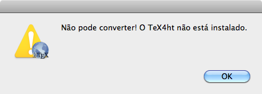
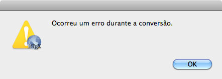

Se o TeX4ht não estiver instalado, o SimpleTeX4ht mostrará a seguinte mensagem de erro:

SimpleTeX4ht não inclui o TeX4ht. Instalar o TeX4ht resolve o problema.

Ocorreu um erro durante a compilação, o TeX4ht não pode converter seu arquivo LaTeX.